Build the Integration Logic
Add the database connector, route records with a Decision step, configure True/False paths, and map the data into the target schema.
What you'll cover
- Configure the Database connector
- Configure a Decision step to test for duplicate entries
- The ‘True’ Path: Configure a Notify step
- The ‘False’ Path: Configure a Branch step
- Configure the data Map
Configure the Database connector
Drag and drop a Database Connector onto the canvas.
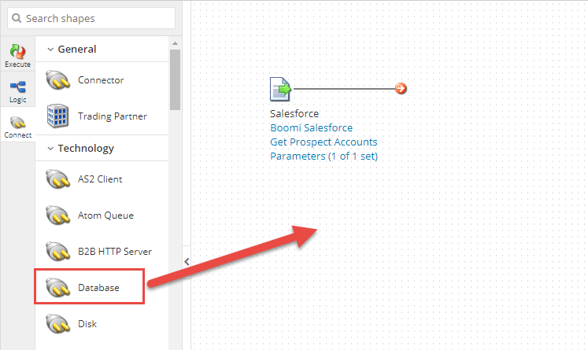
Select ‘Send’ as the Action. For the Connection, click on the browse button and load the preconfigured ‘Boomi MySQL’ database connection. This Connection component is configured to connect to the trainer’s database.
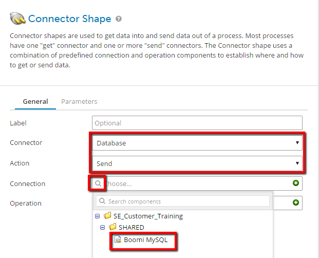
Create a new Operation by clicking on the ‘+’ button.
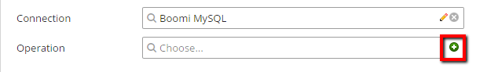
Name the Operation ‘Update Customer Record’. Then, click on the ‘Create a new component’ button to create a new database Profile.
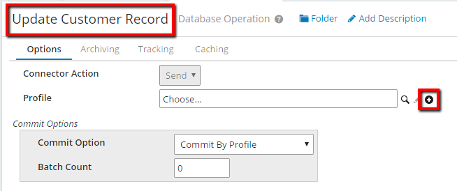
Name the Profile ‘Customer Table’. Within the Data Elements tab, click on the ‘Statement’ node. Select ‘Dynamic Insert’ from the Type dropdown. Click on the ‘Import’ button.
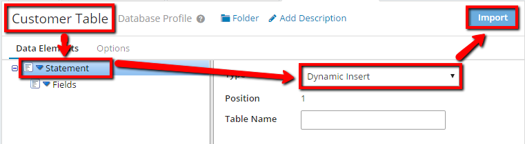
Select the “workshop-atom” Atom from the Atom dropdown. Browse and load the prebuilt ‘Boomi MySQL’ database connector from the ‘SHARED’ folder and click ‘Next’.
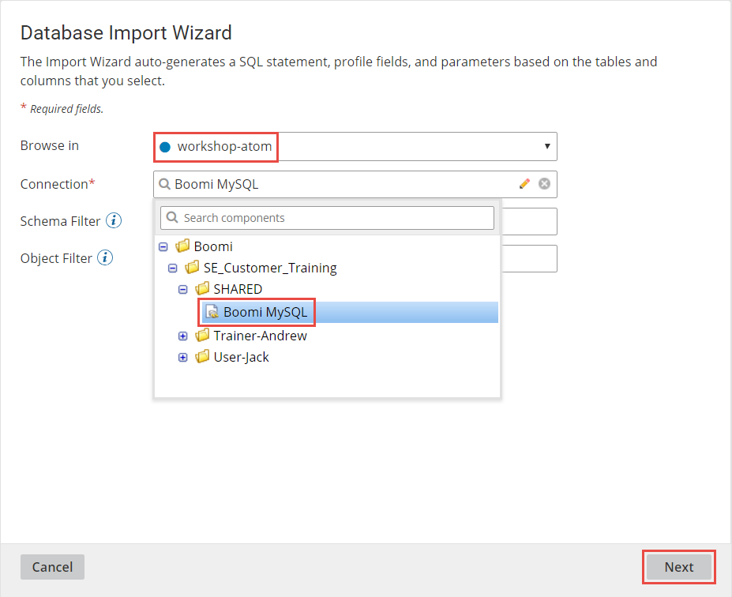
If the Database connection was successful, we should see all the tables that reside within the database. Select the ‘CUSTOMER’ table and click ‘Next’.
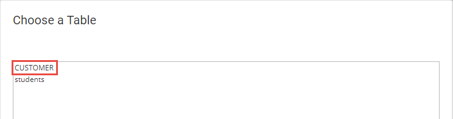
Click the top checkbox to select all the table columns. Click “Next” & “Finish”.
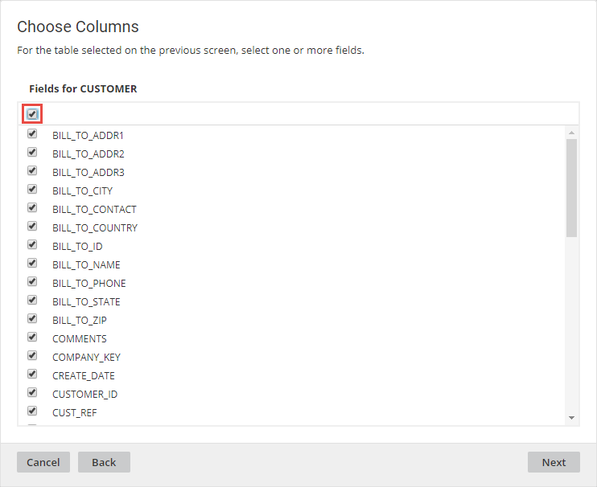
Take note how the database Fields are now populated within the Customer Table Profile. Click ‘Save and Close’.
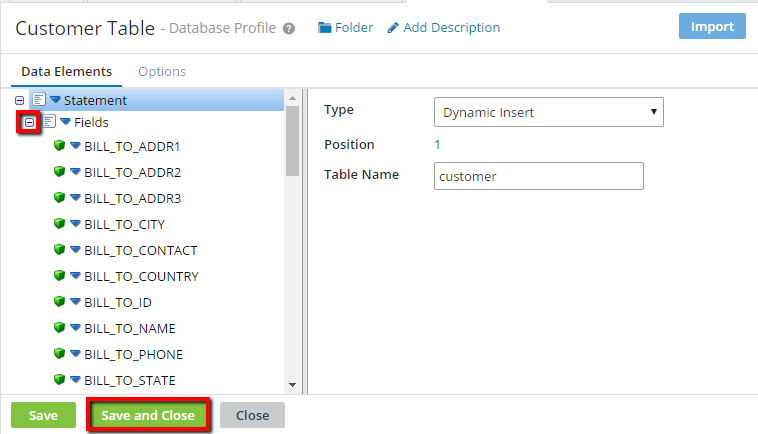
The ‘Customer Table’ Profile is now configured within the ‘Update Customer Record’ Database Operation. Click ‘Save and Close’ to return back to the Connector Action pane.
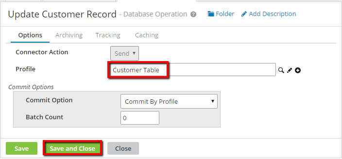
The database connection is now fully configured. Click ‘OK’ to return to the process canvas.
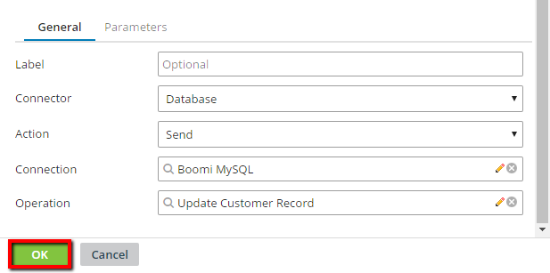
Click ‘Save’ to save the process with these configured connectors.
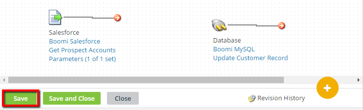
Now is a good time to observe the Component Explorer. You can expand your ‘User-XX’ folder to observe how components are stored accordingly as they get built and saved.
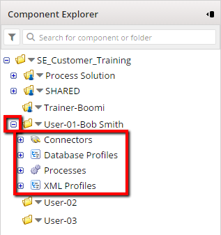
Configure a Decision step to test for duplicate entries
Now that the Salesforce and Database connections are fully configured, we’ll want to test incoming Salesforce Account ‘Prospect’ records against any existing Customer records in the database. From the Logic palette, drag and drop a Decision step onto the canvas,
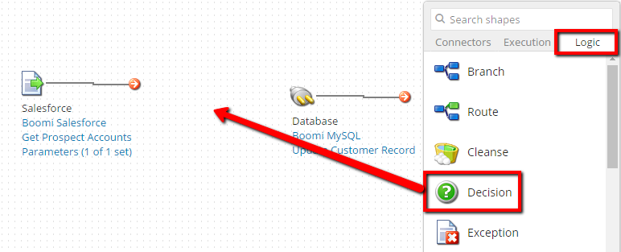
Within the Decision Properties pane, type an appropriate Label, “Does Account Exist in DB?’, to help describe the purpose of this Decision step. Then click on the ‘browse’ button to configure the First Value.
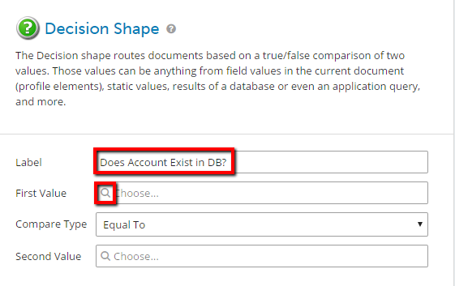
Select ‘SQL Statement’ from the Type dropdown. For the Connection, browse and load the prebuilt ‘Boomi MySQL’ connection from the “SHARED” folder. For Output Type select ‘Integer’. Within the SQL window, type the following SQL statement:
select count(*) from CUSTOMER where NAME = ? and TRAINEE = ‘Your Name’
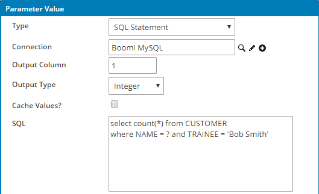
The question mark (?) within the SQL statement represents a dynamic parameter. To bind the appropriate parameter to this placeholder, click on the (+) ‘Add Parameter’ button.
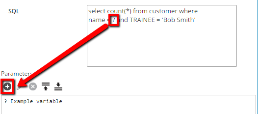
Select ‘Profile Element’ for the Type and ‘XML’ as the Profile Type. Then click on the browse button and select the ‘SF_Account_QUERY_Response’ profile within your ‘User-XX’ folder.
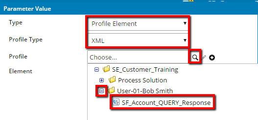
For the Element, click on the browse icon and choose ‘Name’. Click ‘OK’ to assign the ‘Name’ field to the Element and then click ‘OK’ again to return back to the ‘Parameter Value’ pane.
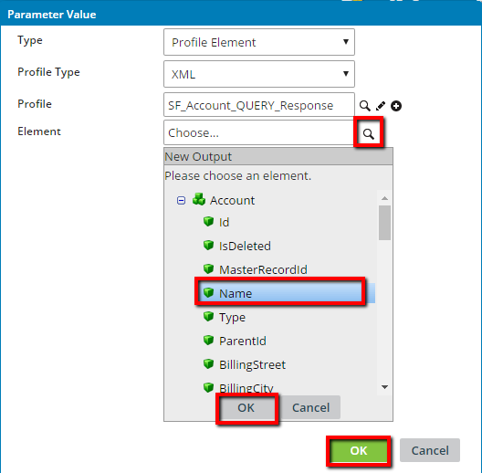
Note how the ‘?’ parameter within the SQL statement is now bound to the ‘Name’ field in the Salesforce response profile. Thus, the SQL statement will return an integer value based on whether or not there already exists a record with that same Account Name belonging to a particular trainee. It will return a ‘0’ if no such record exists and a ‘1’ if the record already exists. Click ‘OK’ to return to the Decision Properties pane.
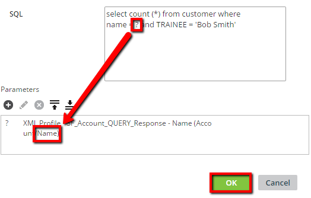
The ‘count(*)’ value returned from the SQL lookup will be stored as the ‘First Value’ in the Decision Properties pane. Choose ‘Not Equal To’ from the Compare Type dropdown. Click the browse button to assign a value to the ‘Second Value’ field.
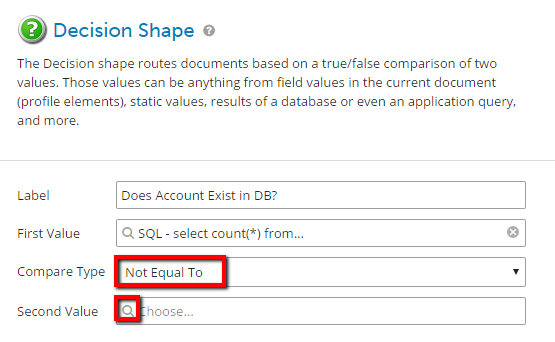
Choose ‘Static’ as the Type and type ‘0’ (zero) as the Static Value. Click ‘OK’
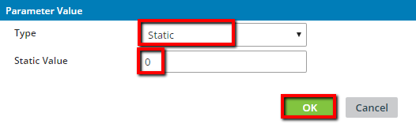
Click ‘OK’ to return back to the process canvas.
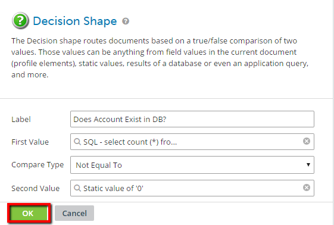
Organize the process by connecting the Salesforce Connector with the Decision step. Notice that the arrow turns green once connected. Click ‘Save’
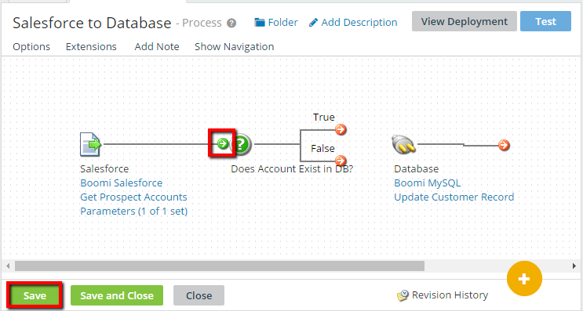
The ‘True’ Path: Configure a Notify step
We now have a test in place to determine if the incoming Account record exists in the database. If it’s true that the Account Name exists in the database, a customized notification log will be configured and the document will not be processed any further. From the Execution pallet, drag and drop a Notify step onto the canvas.
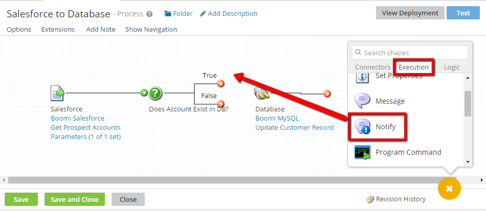
Select ‘Information’ for Message Level and check off both ‘Enable Events’ and ‘Enable User Log’ (scroll down to the “Options” section). Type the following in the Message text:
Account {1} already exists in database.
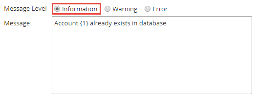
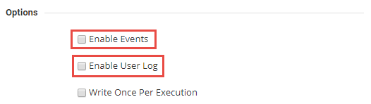
Note how the ‘{1}’ notation within the Message statement acts as a dynamic reference parameter. We will want to bind that to the ‘Name’ field in the Salesforce response profile. Click on the (+) ‘Add Parameter’ button.
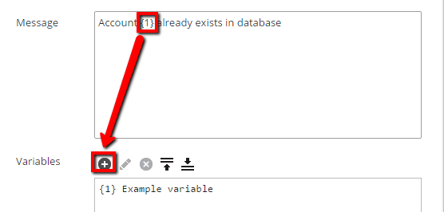
Choose ‘Profile Element’ as the Type, ‘XML’ as the Profile Type and then browse and load the ‘SF_Account_Query_Response’ profile from your ‘User-XX’ folder.
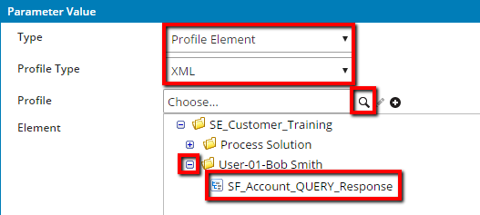
For the Element, click on the browse icon and choose ‘Name’. Click ‘OK’ to assign the ‘Name’ field to the Element and then click ‘OK’ again to return back to the ‘Notify Properties' pane.
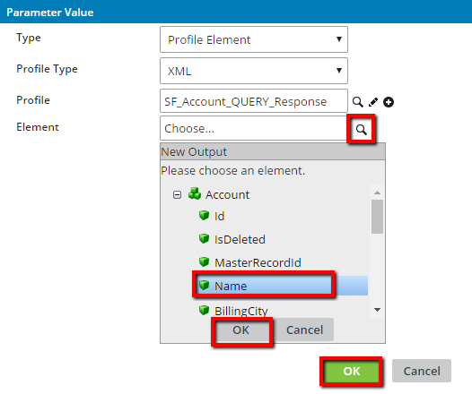
Note how the ‘{1}’ parameter within the Message statement is now bound to the ‘Name’ field in the Salesforce response profile. Click ‘OK’ to return to the process canvas.
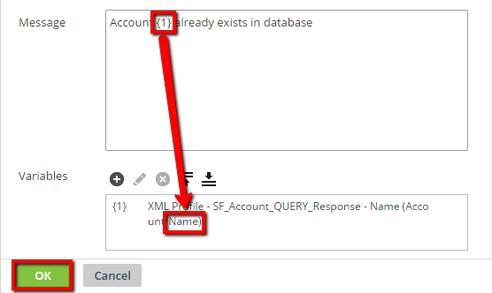
From the Logic pallet, drag and drop a Stop step onto the canvas.
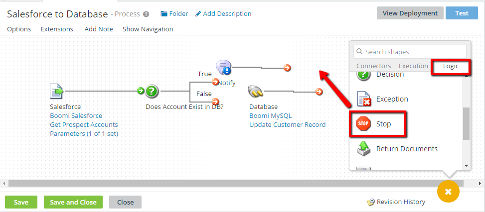
Click ‘OK’ to return to the process canvas.

Connect the ‘True’ path to the Notify step and the Notify step to the Stop step. You may also begin to shift the steps to better organize the flow. Click ‘Save’ to save the process.
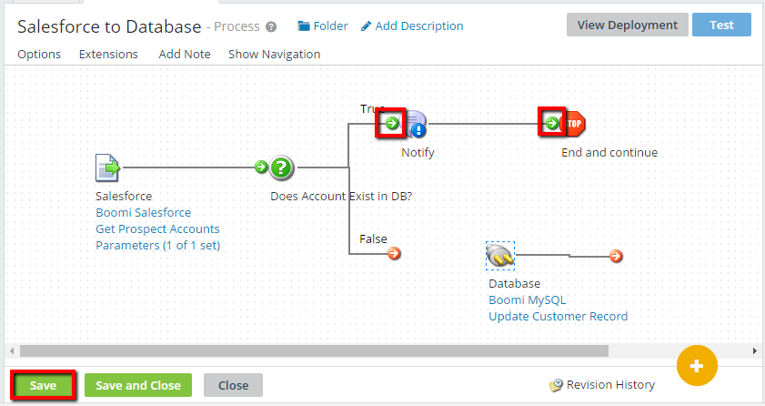
The ‘False’ Path: Configure a Branch step
If it’s false that the Account Name exists in the database (or in other words, if it doesn’t exist in the database), the goal would be to insert this record in the database and then email a user that the record has been inserted. Since we wish to accomplish more than one task, we’ll leverage a Branch step. From the Logic pallet, drag and drop a Branch step onto the canvas.
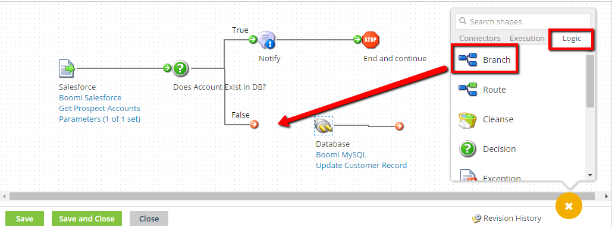
Accept the default and allow for ‘2’ branches. Then click ‘OK’.
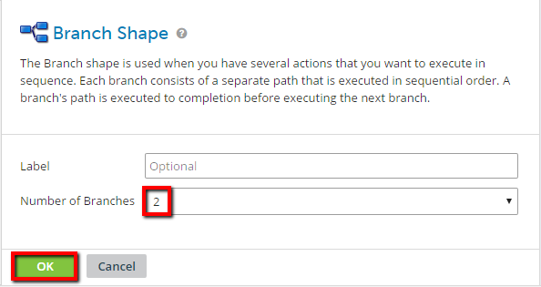
Connect the False path to the Branch step. Click ‘Save’ to save the process.
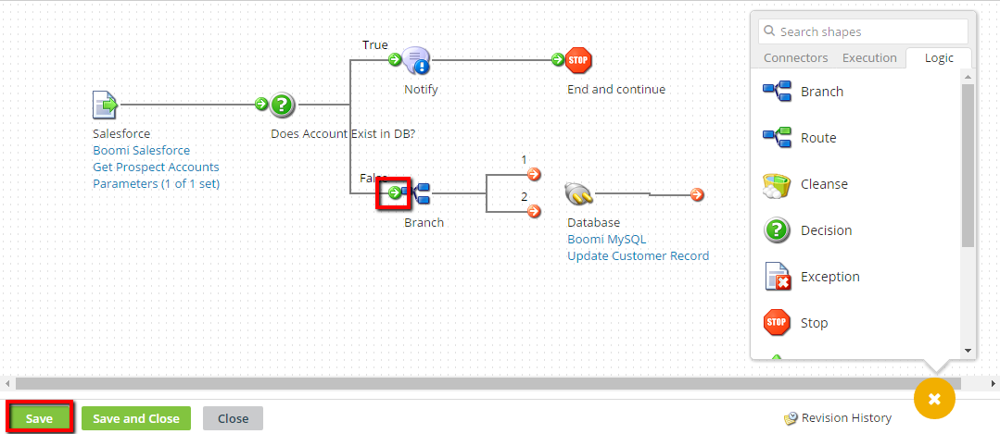
Configure the data Map
From the Execution pallet, drag and drop a Map onto the canvas.
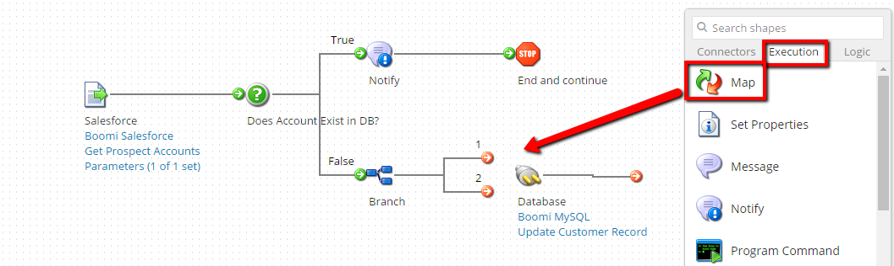
Click on the (+) ‘Create a new component’ button to create a new map.
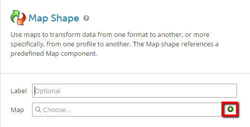
Name the Map ‘SF Accounts to DB Customer’. Then, on the source side, click on the ‘Profile Chooser’ button.
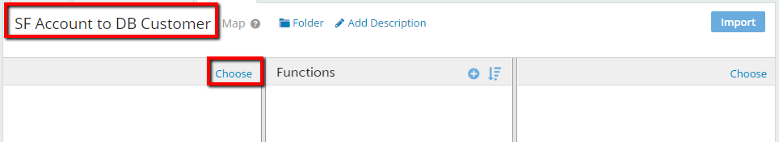
Choose ‘XML’ as the Profile Type. Then navigate to the ‘SF_Account_QUERY_Response’ profile in your ‘User-XX’ folder. Click ‘OK’.
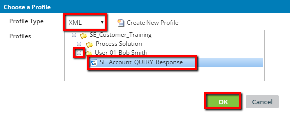
On the destination side, click on the ‘Profile Chooser’ button.
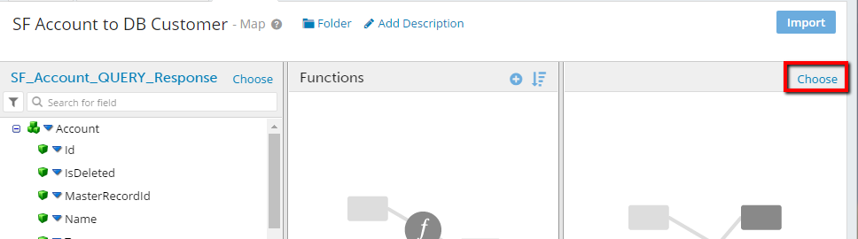
Select ‘Database’ as the Profile Type’ and select the ‘Customer Table’ from your ‘User-XX’ folder. Click ‘OK’.
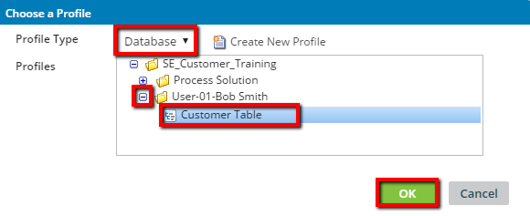
Now that the source and destination profiles are loaded in the Map, it’s time to map over each individual field. To have Boomi automatically map over the majority of these fields, we’ll leverage a crowd-sourcing technology called Boomi Suggest. Click on the ‘Boomi Suggest’ link to initiate this feature.
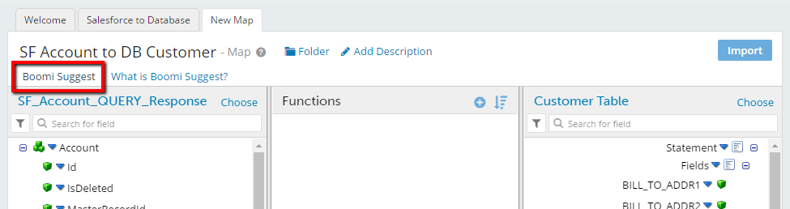
Click ‘Next’ over the next two screens to accept the default mappings offered by Boomi Suggest.
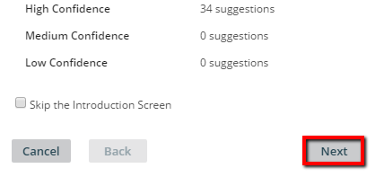
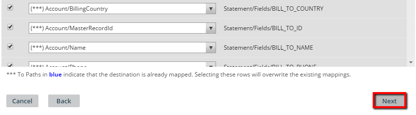
Click ‘Finish’.
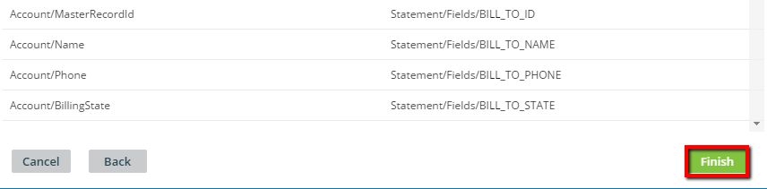
Notice how the individual fields are automatically mapped across. You may need to expand the ‘Fields’ element on the destination ‘Customer Table’ profile to see the individual mappings.
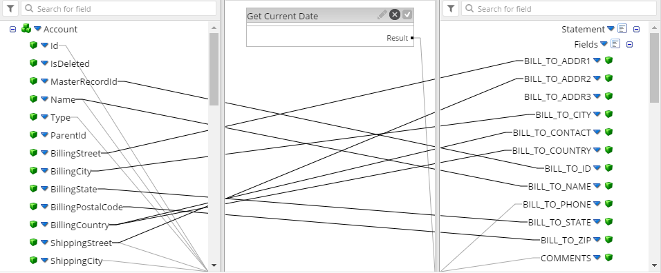
On the destination profile side of the map, scroll down and locate the TRAINEE element. Click on the blue arrow and click on ‘Set Default Value’.
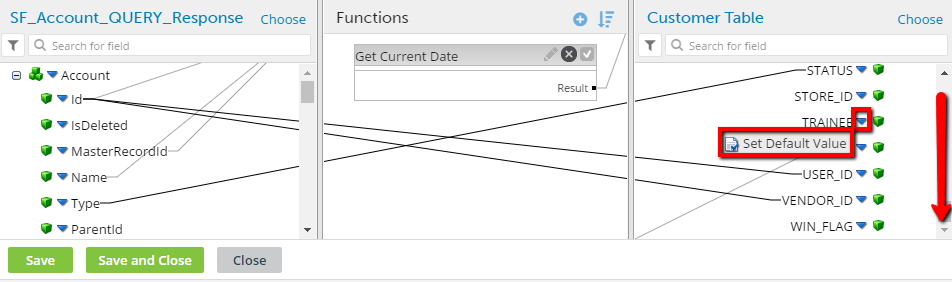
Enter your name for the Value. Be sure to enter the exact string you entered for the Decision SQL statement earlier. Remember…these must match. Click ‘OK’
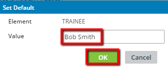
Note how your name is now hard-coded as the value of the TRAINEE element in the database table. Click ‘Save and Close’ to return to the Map Properties.
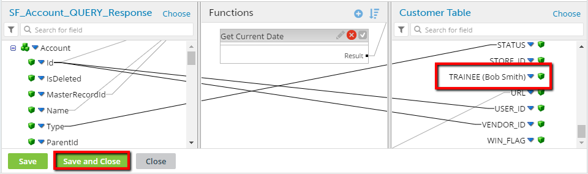
Click ‘OK’ to return back to the process canvas.